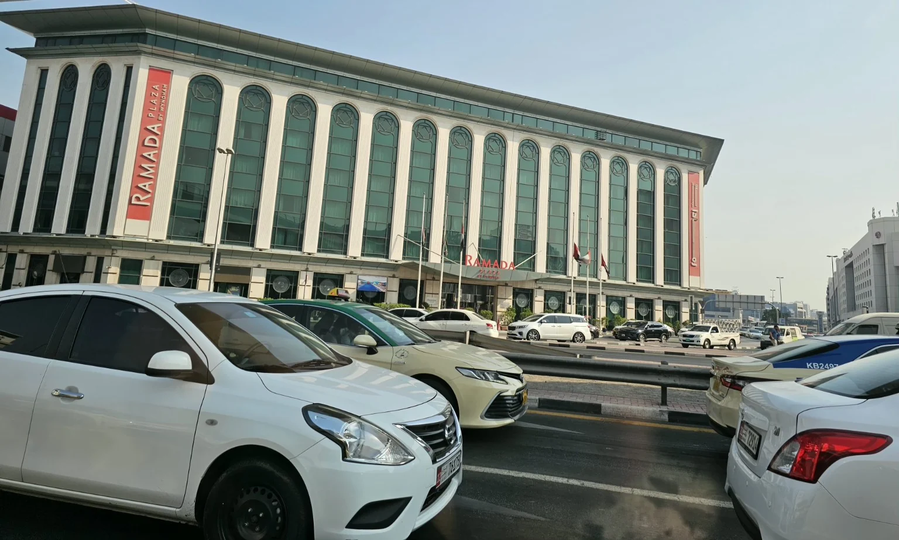
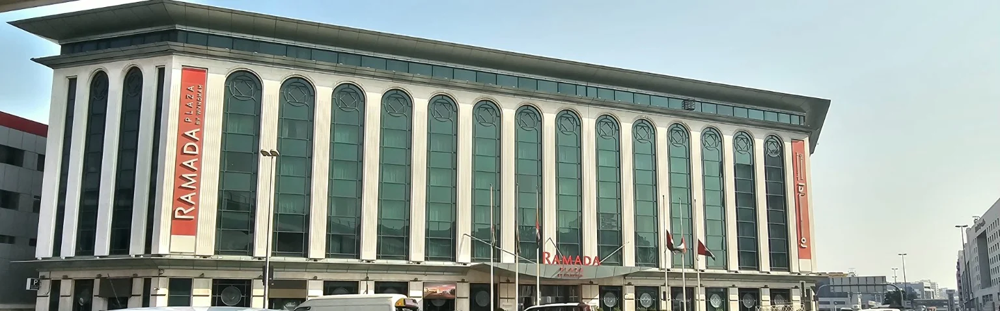
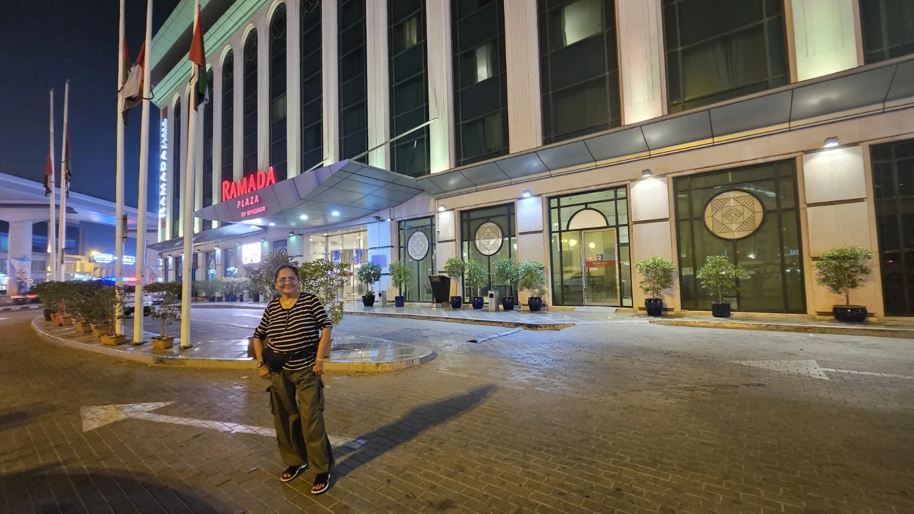
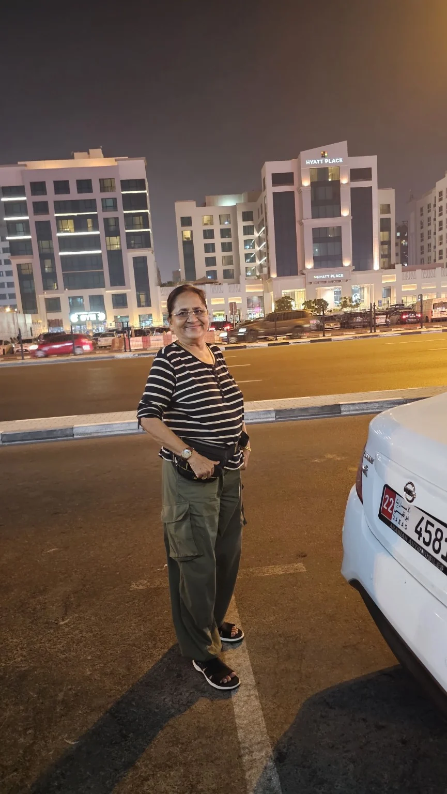
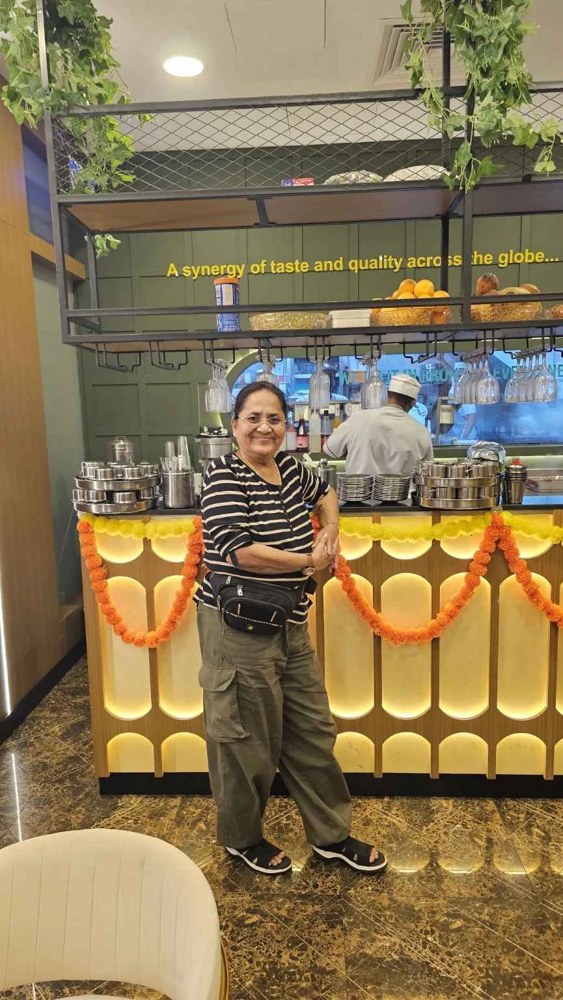
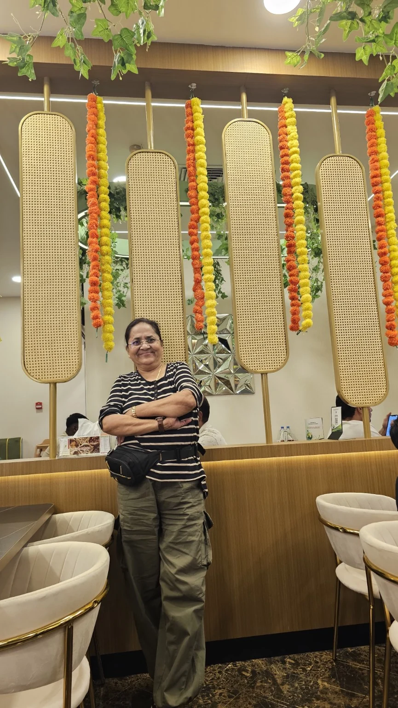
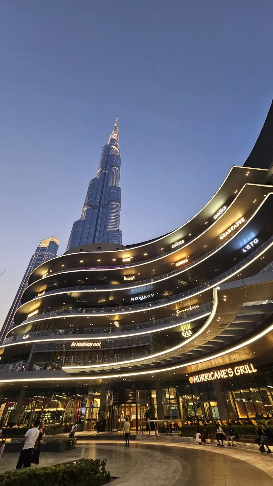
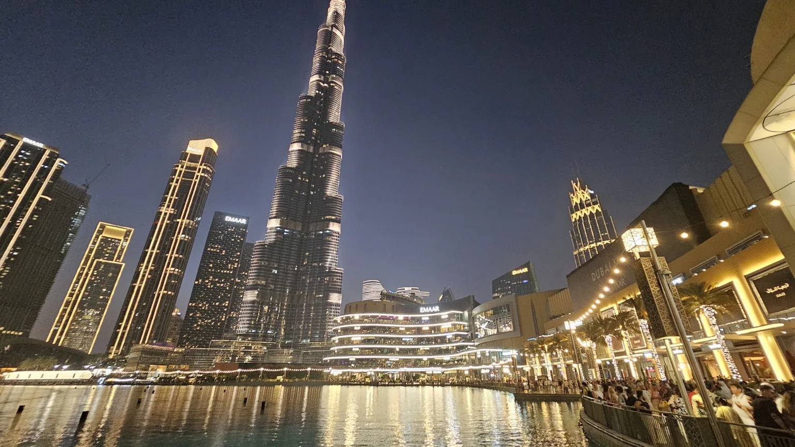

दुबई या आधुनिक, वैभवशाली आणि आकर्षक शहराविषयी मला आणि आमच्या सर्वांनाच खूप कुतूहल होते. दुबईमध्ये काय काय पाहायला मिळणार, तेथील जीवनशैली कशी असेल, उंचच उंच इमारती, आधुनिक वास्तू आणि जगप्रसिद्ध पर्यटनस्थळे प्रत्यक्ष पाहण्याची उत्सुकता मनात होती. विशेषतः पल्लवीने आमच्यासाठी अतिशय सुंदर आणि नियोजनबद्ध ट्रिप आयोजित केली होती, त्यामुळे दुबईला कधी एकदा जाते असे आम्हा सर्वांना झाले होते.
पुण्याहून मुंबईकडे प्रयाण
शेवटी तो दिवस उजाडला—२५ सप्टेंबर! पहाटे साधारण अडीच वाजता आम्ही पुण्याहून कारने मुंबईकडे रवाना झालो. पहाटेचा शांत रस्ता, मनातली प्रवासाची उत्सुकता आणि पुढे सुरू होणारा दुबईचा सुंदर प्रवास—या सगळ्यामुळे आमच्या मनात एक वेगळाच आनंद होता. साधारण साडेचार वाजता आम्ही मुंबईला पोहोचलो.
आमचे विमान सकाळी ८ वाजता इंडिगोचे होते. विमानतळावर पोहोचल्यानंतर सर्व तयारी पूर्ण करून आम्ही उत्साहाने विमानात बसलो. मनात एकच विचार होता—आता काही तासांत आपण दुबईच्या भूमीवर असणार!
दुबईत आगमन
सकाळी ८ वाजता विमानाने उड्डाण केले आणि साधारण ११ वाजता आम्ही दुबईला पोहोचलो. दुबईची वेळ भारताच्या वेळेपेक्षा दीड तास मागे असल्यामुळे आम्ही आमच्या घड्याळातील वेळ दुबईच्या वेळेनुसार बदलून घेतली.
दुबई विमानतळावर उतरल्यानंतर आजूबाजूचे आधुनिक वातावरण पाहून मन प्रसन्न झाले. एका नव्या देशात, नव्या अनुभवांच्या दिशेने आमचा प्रवास सुरू झाला होता.
डेरा परिसरातील आमचे हॉटेल – Ramada Plaza
दुबईमधील डेरा (Deira) परिसरात आमच्यासाठी Ramada Plaza हॉटेलमध्ये राहण्याची व्यवस्था करण्यात आली होती. हॉटेलची इमारत प्रशस्त, सुंदर आणि आकर्षक होती. हॉटेलच्या आसपासचा परिसरही अतिशय गजबजलेला आणि सोयीसुविधांनी परिपूर्ण होता. विशेष म्हणजे मेट्रो स्टेशन जवळ असल्यामुळे प्रवासासाठी हे ठिकाण अतिशय सोयीचे होते.


हॉटेलमध्ये पोहोचल्यावर प्रवासाचा थकवा जाणवत असल्याने आम्ही थोडा आराम केला आणि काही वेळ छान झोपही घेतली. नव्या शहरातला पहिला दिवस असल्यामुळे पुढे काय पाहायला मिळणार याची उत्सुकता मनात कायम होती.
Ramada Plaza – रात्रीच्या प्रकाशात
संध्याकाळी हॉटेलच्या बाहेर पडताना रात्रीच्या प्रकाशात उजळलेले Ramada Plaza आणखी सुंदर दिसत होते. प्रवेशद्वारावरील रोषणाई, उंच इमारत, झाडांची आकर्षक मांडणी आणि आजूबाजूचा प्रकाशमय परिसर यामुळे वातावरण खूपच देखणे वाटत होते. त्या क्षणी या सुंदर हॉटेलसमोर उभे राहून फोटो काढताना मनात आले—दुबईच्या आमच्या प्रवासाची ही पहिली सुंदर आठवण आहे.

बुर्ज खलिफा आणि दुबई मॉलची पहिली झलक
संध्याकाळी साधारण पाच वाजता आम्ही बुर्ज खलिफाच्या परिसरात गेलो. तेथे प्रसिद्ध Dubai Fountain पाहण्याचा अनुभव घेतला. संगीताच्या तालावर आणि प्रकाशाच्या वातावरणात उंच उसळणारे पाण्याचे कारंजे पाहताना आम्ही अक्षरशः मंत्रमुग्ध झालो.
त्यानंतर आम्ही बराच वेळ चालत Dubai Mall पाहिला. त्याचा भव्य विस्तार, आकर्षक दुकाने आणि आधुनिक रचना पाहून दुबईच्या वैभवाची पहिली खरी झलक अनुभवायला मिळाली.
दिवसभराचा प्रवास आणि त्यानंतरचे फिरणे यामुळे आम्हाला थोडा थकवा जाणवत होता. त्यामुळे रात्री पुन्हा आमच्या Ramada Plaza हॉटेलमध्ये परतलो.
पहिल्या दिवसाची सुंदर सांगता
अशाप्रकारे दुबई प्रवासाचा पहिला दिवस उत्साह, आनंद, नवीन अनुभव आणि सुंदर आठवणींनी भरलेला संपला. पुढील दिवसांत दुबईतील आणखी अद्भुत ठिकाणे पाहण्याची उत्सुकता मनात घेऊन आम्ही विश्रांती घेतली.

पहिल्या दिवसाची दक्षिण भारतीय मेजवानी – Saravanaa रेस्टॉरंट
दुबईतील पहिल्याच दिवशी संध्याकाळचे जेवण आम्ही भारतीय पद्धतीचे दक्षिण भारतीय पदार्थ मिळणाऱ्या Saravanaa रेस्टॉरंटमध्ये केले. परदेशात असूनही आपल्या घरच्या चवीची आठवण करून देणारे दक्षिण भारतीय पदार्थ मिळाल्यामुळे आम्हाला खूप आनंद झाला. रेस्टॉरंटचे सुंदर, आकर्षक आणि प्रसन्न वातावरणही मनाला भावले. पहिल्या दिवसाच्या सुंदर आठवणींमध्ये या जेवणाचीही एक खास आठवण जपली गेली.


बुर्ज खलिफासमोरील मनमोहक फाउंटन शो
पहिल्या दिवशी संध्याकाळी आम्हाला बुर्ज खलिफासमोर अतिशय सुंदर फाउंटन शो पाहायला मिळाला. संगीताच्या तालावर, सुंदर प्रकाशयोजनेसोबत एका छान लयीत आणि आकर्षक क्रमाने हे फाउंटन सुरू होत होते. दर अर्ध्या तासाने साधारण दोन ते तीन मिनिटांचा फाउंटन शो होत असे. पाण्याच्या उंच उसळणाऱ्या लाटा, संगीत आणि प्रकाश यांचा सुंदर मेळ पाहताना मन अगदी आनंदून गेले. तो अनुभव खरोखरच अल्हाददायक आणि अविस्मरणीय होता.


फाउंटन शो पाहून आम्ही पुन्हा मेट्रोने परतीचा प्रवास सुरू केला. Financial Centre, Union आणि Abu Bakr Al Siddique या मार्गाने आम्ही पुन्हा Deira परिसरातील आमच्या Ramada Plaza हॉटेलमध्ये परतलो. दिवसभराच्या सुंदर अनुभवांमुळे मन अगदी प्रसन्न झाले होते. हॉटेलमध्ये परतल्यानंतर आम्ही शांतपणे विश्रांती घेतली आणि झोपलो. अशा प्रकारे दुबईतील आमचा पहिला दिवस उत्साह, सुंदर दृश्ये, स्वादिष्ट जेवण आणि अविस्मरणीय आठवणींनी भरून संपला.